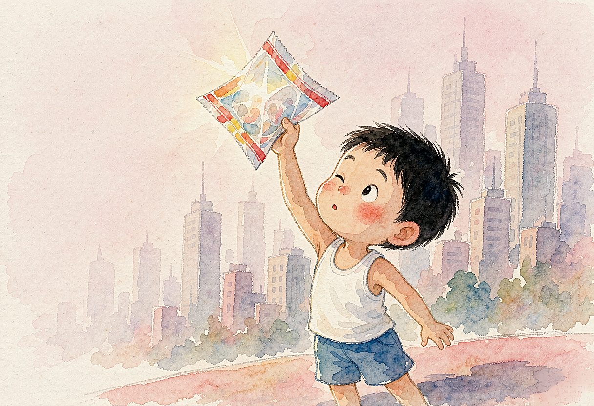

儿时过年，总是那么令人期待。那时候，物质匮乏，糖果是难得一见的美味，只有到了过年，家家户户才会去买点糖果，作为节日的点缀。记得我有一个漂亮的糖果罐，得到的糖果被我珍藏在宝库般的小罐里，慢慢享用。
吃糖的乐趣并不仅仅在于糖果本身。更让我和小伙伴们着迷的，是那些包裹在糖果外面的糖纸。它们是我们珍贵的“收藏品”。
收集最多的是大白兔奶糖的糖纸，洁白的，上面印着一只憨态可掬的大白兔，正捧着一根胡萝卜，眼睛笑得眯成了一条缝。每次吃到大白兔奶糖，我总是小心翼翼地剥开糖纸，生怕弄皱了它。然后，把糖纸抚平，夹在书页里，仿佛这样就能留住那份甜蜜和幸福。
还有一种水果糖，糖纸是透明的，上面印着各种水果的图案，有鲜红的苹果、金黄的香蕉、碧绿的西瓜……透过糖纸，仿佛能看到里面晶莹剔透的糖果，让人垂涎欲滴。我们常常会透过糖纸看天空，看老弄堂里煤炉上升起的袅袅炊烟，看周遭的房屋，看整个世界，我们发现，透过糖纸，一切都变得五彩斑斓，连平凡的日子也多了几分色彩。
最让我们兴奋的是那些带有故事图案的糖纸。有一种硬糖，糖纸是正方形的，上面印着连环画式的小故事，有《西游记》里的孙悟空三打白骨精，有《水浒传》里的武松打虎，还有《三国演义》里的桃园三结义……我们一边吃着糖，一边看着糖纸上的故事，仿佛自己也置身于那个传奇的世界，变身为其中的某一个角色。
收集糖纸成了我们年节里最大的乐趣。每当有亲戚朋友来访，我们总是傻楞楞盯着他们手中的糖果袋，期待着能从中找到一些新的、漂亮的糖纸。
弄堂里的阿强和我一样，对糖纸有着近乎痴迷的喜爱。有一年春节前夕，他听说市中心的一家新开的糖果店里，有一种特别设计的糖纸，上面印有璀璨的城市夜景图案，非常漂亮。为了得到这种糖纸，我们决定一起去那家糖果店。
那天，街道两旁挂灯结彩，洋溢着浓浓的年味。我们手拉手，穿梭在熙熙攘攘的人群中，兴奋得像两只小鹿。到了糖果店，我们果然看到了那种糖纸。我们各自买了一包糖果，小心翼翼地剥开糖纸，那一刻，仿佛整个城市的繁华与美好都被我们握在了手中。
如今，那些曾经陪伴我们度过无数欢乐时光的糖纸已经不知去向，但那份纯真的快乐和美好的记忆却永远留在了我的心底。每当回想起那段时光，我都会感叹：幸福有时真的很“简单”。
（本文刊登于2025.2.27《上海老年报》）